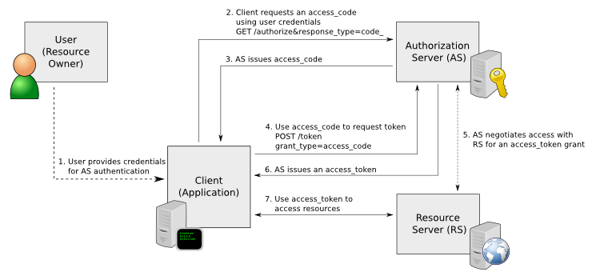

REST (REpresentational State Transfer) is a framework for API design. REST builds a simple API on top of the HTTP protocol. It is based on generic facilities of the standard HTTP protocol, including the six basic HTTP methods (GET, POST, PUT, DELETE, HEAD, INFO) and the full range of HTTP return codes. You can discover REST APIs by navigating links embedded in the resources provided by the REST API, which follow common encoding and formatting practices.You can invoke the REST API to enable communication from one Riverbed appliance to another through REST API calls, for example:A Cascade Profiler appliance communicating with a Cascade Shark appliance. A Cascade Profiler appliance retrieving a QoS configuration from a Steelhead appliance. For all uses you must preconfigure an access code to authenticate communication between parties and to authorize access to protected resources.For details, see the Steelhead Appliance REST API Guide.The REST API calls are based on the trusted application flow, a scenario where you download and install an application on some host, such as your own laptop. You trust both the application and the security of the host onto which the application is installed.For example, suppose you install a Python script on a Linux box that queries QoS policies on a Steelhead appliance and prints a summary as text output. You install the script under your home directory and configure the script with credentials to access the Steelhead appliance. Once set up, you can simply log in to the Linux box and run the script. Because you already preconfigured credentials with the Steelhead appliance, you can run the script without any user interaction after logging in. This enables you to schedule execution through cron, or chain it with other scripts that process the text data and combine it with other functionality.This basic authentication sequence assumes you have already downloaded the Python script and installed it on a Linux box:Figure 8‑1. REST API Access Authentication Sequence
Copy the access code copied from the Management Console REST API Access page into the configuration file of your external script. The script uses the access code to make a call to the appliance/system to request an access token. The appliance/system validates the access code and returns an access token for use by the script. Generally the access token is kept by the script for a session only (defined within your script), but note that the script can make many requests using the same access token. These access tokens have some lifetime—usually around an hour —in which they are valid. When they expire, the access code must fetch a new access token. The script uses the access token to make REST API calls with the appliance/system.
|
|